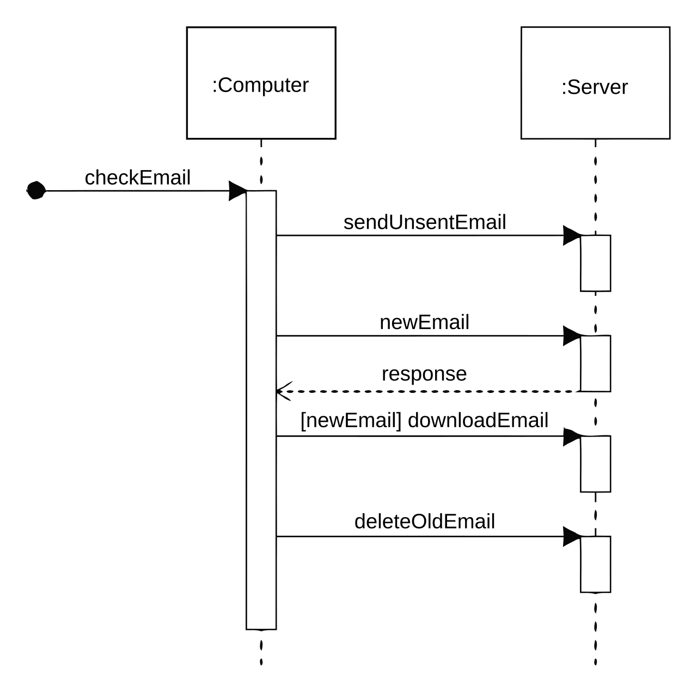

Sequence diagram
Mis on Sequence diagram?
See diagramm kujutab kaasatud protsesse ja objekte ning funktsioonide
täitmiseks vahetatud sõnumite jada.
Järjestusskeeme nimetatakse mõnikord sündmuste diagrammideks või sündmuste
stsenaariumideks .
Järjestusskeeme on kahte tüüpi:
-
Järjestusskeem (SD) : jadaskeemi
tavaversioon kirjeldab süsteemi toimimist ja iga
süsteemi sees olev objekt on konkreetselt kirjeldatud.
-
System Sequence Diagram (SSD) : kõiki
süsteeme käsitletakse musta kastina , kus ei
ole kujutatud kõiki süsteemile kuuluvaid klasse.
Selle asemel on kujutatud ainult objekt nimega System.
Kus kasutatakse swquence diagram?
Spetsialistid kasutavad projekti väljatöötamisel sageli süsteemi jadaskeeme,
et illustreerida, kuidas teatud ülesandeid kasutajate ja süsteemi vahel tehakse.
Need ülesanded võivad sisaldada korduvaid, lihtsaid või keerulisi ülesandeid.
Eesmärk on illustreerida kasutusjuhtumit visuaalses vormingus.
Näide

Viited infoallikatele